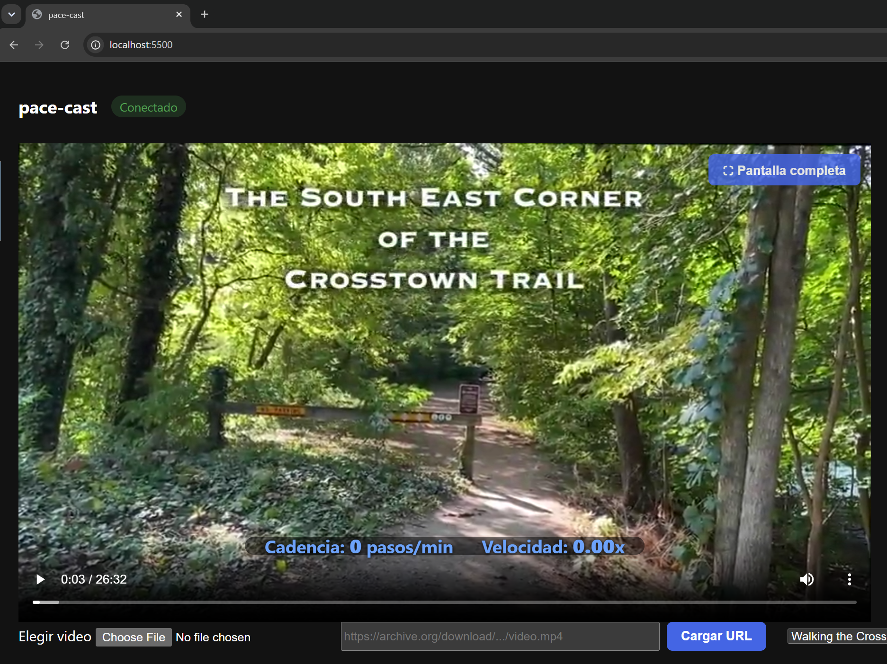

<style>
  .proj-back { font-size:.85rem; margin-bottom:1.25rem; }
  .proj-back a { color:var(--muted,#6d7281); }
  .proj-back a:hover { color:var(--blue,#0092ca); }
  .proj-actions { display:flex; gap:.6rem; flex-wrap:wrap; margin-bottom:1.75rem; }
  .btn-gh {
    display:inline-flex; align-items:center; gap:.4rem;
    background:var(--dark,#252a34); color:#fff;
    font-size:.82rem; font-weight:600; letter-spacing:.03em;
    padding:.42rem .9rem; border-radius:4px; text-decoration:none;
    transition:background .2s;
  }
  .btn-gh:hover { background:#1a1e27; text-decoration:none; }
  .btn-secondary {
    display:inline-flex; align-items:center; gap:.4rem;
    background:#fff; color:var(--dark,#252a34);
    border:1px solid var(--border,#e8e8e8);
    font-size:.82rem; font-weight:600; letter-spacing:.03em;
    padding:.42rem .9rem; border-radius:4px; text-decoration:none;
    transition:border-color .2s, color .2s;
  }
  .btn-secondary:hover { border-color:var(--blue,#0092ca); color:var(--blue,#0092ca); text-decoration:none; }
  .proj-img { width:100%; margin-bottom:1.75rem; }
  .proj-img img { width:100%; height:auto; display:block; border-radius:6px; border:1px solid var(--border,#e8e8e8); }
  .screenshots { display:grid; grid-template-columns:1fr 1fr; gap:.75rem; margin-bottom:1.75rem; }
  .screenshots img { width:100%; height:auto; display:block; border-radius:6px; border:1px solid var(--border,#e8e8e8); }
  .placeholder-img {
    width:100%; height:200px; background:#f5f6f8;
    border:2px dashed #d0d4dc; border-radius:6px;
    display:flex; align-items:center; justify-content:center;
    color:#9aa0ad; font-size:.9rem; margin-bottom:1.75rem;
  }
  /* Badge system */
  .badge {
    display:inline-flex; align-items:center;
    font-size:.72rem; font-weight:600; letter-spacing:.03em;
    padding:.18rem .55rem; border-radius:20px;
    text-transform:uppercase; white-space:nowrap;
  }
  /* Recurring concepts — consistent color across all project pages */
  .badge-apple { background:#edf2ff; color:#3b5bdb; }   /* ARKit · Swift · Xcode · iPhone */
  .badge-unity { background:#d3f9d8; color:#2f9e44; }   /* Unity · C# */
  .badge-vr    { background:#e3fafc; color:#0c8599; }   /* SteamVR */
  /* Single-occurrence concepts */
  .badge-gray  { background:#f1f3f5; color:#495057; }
  .note-box {
    font-size:.85rem; color:#555; background:#f7f9fc;
    border-left:3px solid var(--border,#e8e8e8);
    padding:.7rem 1rem; border-radius:0 4px 4px 0;
    margin-bottom:1.5rem;
  }
  .note-box a { color:var(--blue,#0092ca); }
  .stack-group { margin-bottom:1.1rem; }
  .stack-label {
    font-size:.72rem; font-weight:700; text-transform:uppercase;
    letter-spacing:.07em; color:var(--muted,#6d7281); margin-bottom:.4rem;
  }
  .badge-row { display:flex; flex-wrap:wrap; gap:.3rem; }
  .collab-list { list-style:none; margin:0; padding:0; }
  .collab-list li { font-size:.9rem; margin-bottom:.4rem; display:flex; align-items:center; gap:.5rem; }
  .collab-list li .collab-role { font-size:.78rem; color:var(--muted,#6d7281); }
</style>

<main>
  <p class="proj-back"><a href="../">← Software</a></p>
  <h1>Pace Cast</h1>

  <div class="proj-actions">
    <a class="btn-gh" href="https://github.com/leonelmerino/pace-cast" target="_blank" rel="noopener">
      <i class="fab fa-github"></i> Repositorio GitHub
    </a>
  </div>

  <div class="proj-img">
    
  </div>

  <h2>Descripción</h2>
  <p>
    Pace Cast es una prueba de concepto que usa un HTC VIVE Ultimate Tracker en el pie como
    sensor de marcha para controlar la velocidad de reproducción de un video de recorrido en
    primera persona en tiempo real. Caminar en el lugar aumenta la velocidad de reproducción
    mientras se preserva el tono de audio, creando un acoplamiento perceptual fluido entre
    el movimiento físico y la locomoción visual.
  </p>
  <p>
    El sistema consta de un backend en Python que lee datos del tracker mediante SteamVR y un
    frontend web (servido en un navegador basado en Chromium) que recibe comandos de velocidad
    de reproducción y ajusta el video en consecuencia. Este POC explora la interacción encarnada
    para navegación virtual y experiencias de medios inmersivos.
  </p>

  <h2>Stack</h2>
  <div class="stack-group">
    <p class="stack-label">Tecnologías</p>
    <div class="badge-row">
      <span class="badge badge-gray">Sensor de marcha</span>
      <span class="badge badge-gray">Seguimiento en tiempo real</span>
      <span class="badge badge-gray">Control de reproducción de video</span>
      <span class="badge badge-gray">Preservación de tono</span>
      <span class="badge badge-gray">WebSocket / HTTP</span>
    </div>
  </div>
  <div class="stack-group">
    <p class="stack-label">Software</p>
    <div class="badge-row">
      <span class="badge badge-gray">Python 3.10+</span>
      <span class="badge badge-vr">SteamVR</span>
      <span class="badge badge-gray">VIVE Hub</span>
      <span class="badge badge-gray">Chromium</span>
      <span class="badge badge-gray">HTML / JavaScript</span>
    </div>
  </div>
  <div class="stack-group">
    <p class="stack-label">Hardware</p>
    <div class="badge-row">
      <span class="badge badge-gray">HTC VIVE Ultimate Tracker</span>
      <span class="badge badge-gray">VIVE Wireless Dongle</span>
      <span class="badge badge-gray">Windows PC</span>
    </div>
  </div>

  <h2>Colaboradores</h2>
  <ul class="collab-list">
    <li>Leonel Merino <span class="collab-role">Colaborador Principal</span></li>
  </ul>
</main>
